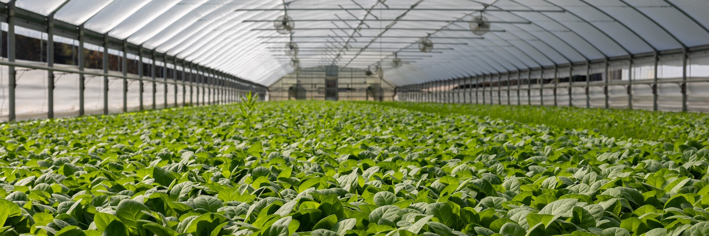

Dicas de plantio
Dica 1: Utilização eficaz de máquinas e insumos
Para se fazer uma utilização eficaz das máquinas e insumos que serão necessários ao longo de todo o processo é importante sempre respeitar os estágios de crescimento (ciclo fenológico) da planta, uma vez que qualquer desvio nesta operação pode resultar em perdas que dificilmente serão corrigidas.
Dica 2: Revisão pré-plantio de máquina
Na sequência, é fundamental realizar a revisão de pré-plantio, na qual todas as partes da frota são analisadas. Dessa forma, no momento em se que inicia o processo, não haverá necessidade de a máquina parar para fazer manutenção, o que impacta diretamente na colheita.
Dica 3: Monitoramento constante
Também deve-se monitorar, constantemente, o clima e a capacidade de campo do solo para definir o momento exato para o melhor plantio. Como cada planta tem um ciclo diferente, plantar na época certa garante seu desenvolvimento correto e, consequentemente, produtividade maior.
Dica 4: Gerenciamento de adubo e sementes
Somando-se a isso, as janelas de plantio estão cada vez mais curtas, em decorrência das mudanças climáticas pelo país, que tornam a qualidade cada vez mais evidente. Dessa forma, o agricultor precisa gerenciar a distribuição correta de adubos e sementes no solo.